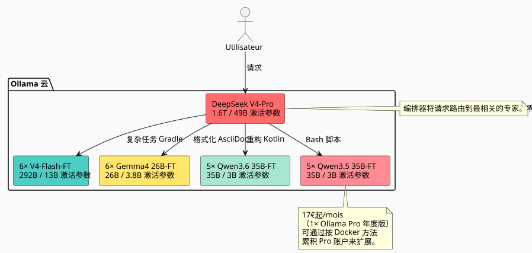
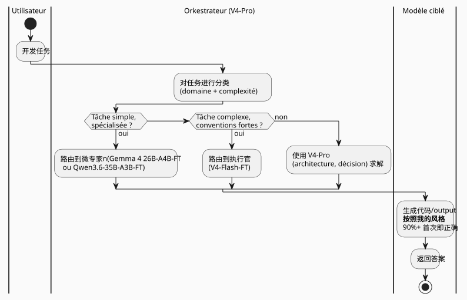

比 Claude 和 GPT 高效 27 到 45 倍：一支由 23 个经过微调的 AI 专家组成的舰队如何碾压市场
发布于 11 May 2026
当你日常使用 LLM 进行软件开发时，最终总会撞上同一堵墙：模型并不了解*你的*代码库。它不知道你使用的是某种……模式的https://fr.wikipedia.org/wiki/Graphe_orient%C3%A9_acyclique[DAG]，这样的 Gradle 约定，这样的认识论分层在你们的https://fr.wikipedia.org/wiki/AsciiDoc[.adoc]. 于是我们给它注入上下文，反复重复，纠正，迭代。而时间——以及金钱——就这样流逝。
于是我把问题直接抛了出来：在我的 workspace 上微调一组模型，让它们能直接吐出*符合我风格*的代码、而不需要每次都向它们解释，这要花多少钱？更重要的是：这种方法与经典的专有方案——Claude、GPT、Gemini、Grok——相比如何？
这个回应让我感到惊讶。比我预想的少得多。而且与行业巨头相比，成本/效益比简直好得离谱。以下是完整细节。
问题：为什么选择微调而不是 RAG？
RAG 很好。我的知识图谱 和 我的认知分区 都有效。但 RAG 有一个根本缺陷：每次查询时，你都必须重新注入相关上下文。你的提示词会变长，延迟会飙升，而模型永远不会*内化*你的模式——它每次都会像读取外部文档一样读取它们。
微调，则是肌肉记忆。模型*知道*你在写`build.gradle.kts`带有通过 记录的任务`tasks.register`，你的`AGENTS.adoc`遵循标准化语法，你的工作区按 boroughs 划分。它不需要别人提醒。
|
微调不是 RAG 的替代方案。它是一个补充层。RAG 仍然适用于经常变化的数据（日志、工单、近期提交）。微调则面向长期的*结构性*和*风格性*知识。 |
理念：一支专家舰队，而非单一模型
一个在我的整个工作区上微调过的单一模型，这已经不错了。但这是次优的。我的工作区涵盖非常不同的领域：
-
Gradle 插件（Kotlin、约定插件、复合构建）
-
DAG 引擎（Kotlin、调度、执行）
-
LLM 智能体（Python、LangChain4j、RAG）
-
架构文档（AsciiDoc、治理）
-
基础设施/DevOps（Docker、GitHub Actions、CI/CD）
一个单一模型应该处处表现良好，却无处出色。解决方案？一种专用模型集群，并有一个编排器将每个请求路由到合适的专家。

总舰队：1 个编排器 + 22 位专家 = 23 个模型那么每月的推理成本呢？17€/月采用 Ollama Pro 年度订阅——如果配额超出，可通过累加账户来扩展，正如 我的多账户 Docker 方法 所示。起步价为 17€，之后根据实际需求每档增加 20€。不浪费。
代码库聚焦：7 900 个文件、144 000 行
在估算训练成本之前，必须先知道要训练什么。我审计了我的工作区，严格排除了所有被 Git 忽略的内容：
----
build/ out/ node_modules/ runtimes/ .gradle/ dist/
target/ venv/ __pycache__/ .cache/ .tox/
----
以下是仅针对已跟踪文件的结果：
[cols="2,2"]
|===
|度量 |值
|已跟踪的源文件 |**7 896** |代码行数（LOC） |**143 805** |Git 仓库 |**26** |主要语言 |Kotlin（1 903）、AsciiDoc（2 765）、Python（5 029）
|===
[IMPORTANT]
====
这 5,000 多个 Python 文件包括`runtimes/`实用 notebook 和脚本。应用核心（Gradle 插件、DAG 引擎、代理）主要使用 Kotlin 和 AsciiDoc。
====
基于这一大批数据，我估计能够生成一个合成数据集，包含**~1.7亿个token**通过一个指导型 LLM（将代码库蒸馏为指令/响应对）。
=== 按专家类型划分的数据集详情
[source,text]
----
Dataset maître (généraliste V4-Flash) : 50M tokens
Expert Gradle/Build : 15M tokens
Expert Kotlin/DAG : 15M tokens
Expert AsciiDoc/Gouvernance: 15M tokens
Expert Agent/LLM/Python : 15M tokens
Expert Infra/CI-CD : 15M tokens
Micro-experts Qwen/Gemma : ~5M tokens chacun
----
== 模型选择：100% MoE，零稠密
正是在这里，架构变得真正高效。
一个*稠密*模型在每个 token 处激活其全部权重。一个*MoE*（Mixture of Experts，混合专家）模型只激活其一部分参数。推理成本——以及微调成本——与参数数量成正比**已激活**，而非参数**储存的**.
让我们看看如今 Ollama Cloud 上的 MoE 市场提供了什么：
[cols="3,2,2,1,3"]
|===
|模型 |总参数 |已启用 |激活 |Ollama Cloud
|DeepSeek V4-Pro |1.6T |49B |3.1% |✅ 母语 |DeepSeek V4-Flash |292B |13B |4.5% |✅ 原生 |Gemma 4 26B-A4B |26B |38亿 |14.6% |✅ 母语 |Qwen3.6-35B-A3B |35B |3B |8.6% |❌（尚未集成） |Qwen3.5-35B-A3B |35B |3B |8.6% |✅ 母语者
|❌ Qwen3.5-27B |27B |27B |100% 密集的 |被淘汰 |❌ Qwen3.5-4B/9B |4B/9B |4B/9B |100%浓密 |被淘汰的 |❌ Gemma 4 31B |31B |31B |100% 致密 |淘汰
|🧪 Gemma 4 E2B/E4B |5B/8B |5B/8B |100%致密 |验证流水线
|===
[CAUTION]
====
激活比率是判别标准。Gemma 4 26B-A4B 仅激活其 26B 参数中的 3.8B——这比一个 27B 稠密模型少 7 倍，却能实现可比的编码智能体性能（在 LiveCodeBench v6 上为 77.1% 对 80%）。
====
=== 为什么我放弃稠密模型
例外：Gemma 4 E2B 和 E4B。这两个模型采用 Apache 2.0 许可，非常适合低成本地测试和验证训练流水线。在 E2B 上跑一次 2–3 小时的运行成本不到 $5——如果数据集或超参数有问题，花几美元就能知道。一旦流水线磨合顺畅，它们甚至可以用于超微型任务（简单的格式重排、二分类）。但对于主力模型阵容中的专家模型，我仍坚持用 MoE。原因如下：
.但不止于此：Gemma 4 E2B/E4B，精细匿名化领域的专家
[NOTE]
====
Google 将这些小模型设计为在原生工具调用方面具有竞争力——它们能够调用函数、操作正则表达式、查找模式。一旦在匿名化示例（电子邮件、令牌、UUID、文件路径）上微调后，它们就会成为**数据集匿名化工具**超快。你给它们一段纯文本，它们就调用`sed`/`regex`通过一次工具调用并返回清理后的块。推理成本微不足道：激活 5B，只需一块入门级 GPU 就能运行。这些模型不是领域专家——它们是**专业工人**在数据集的生产链中。
====
* 其训练VRAM（即使在QLoRA中）与……成正比**总计 27B**
* 他的训练时间与……成正比**27B 激活**
让我们与 Qwen3.6-35B-A3B（MoE）进行比较：
[cols="3,2,2,2"]
|===
| |请提供需要翻译的法语文本。 |Qwen3.6-35B-A3B（MoE） |比率
|VRAM QLoRA |~55 GB |~35 GB |1.6× |GPU 小时（8M tok） |约12小时 |~4小时 |**3×** |每次微调的成本 |~$24 |~$8 |**3×** |SWE-bench Verified |75.0% |73.4% |可比的
|===
MoE 的训练成本仅为三分之一，即可在智能体编程性能上达到 5% 以内的差距。就 22 个专家而言，这一差距相当于数千欧元。
== 训练估算：811 H100-小时
我按模型逐一分摊了训练成本，采用 4-bit QLoRA，并使用上文描述的数据集。
=== 轻量级 MoE 微专家（3-3.8B 激活）
这些模型每次运行需要 1 个 H100（80 GB）。模型在 Q4 下的 VRAM 约为 13-18 GB，为 LoRA 优化器状态和激活留出了充足的空间。
[cols="4,2,3,2"]
|===
|模型 |运行次数 |GPU-h/次 |GPU总小时数
|Gemma 4 26B-A4B-FT |6 |3.5 h |**21时** |Qwen3.6-35B-A3B-FT |5 |4.0 h |**20时** |Qwen3.5-35B-A3B-FT |5 |4.0 h |**20时** |*Micro 小计* | | |*61 h*
|===
=== V4-Flash 执行版（激活 13B / 存储 292B）
DeepSeek V4-Flash 是一个特例。尽管每个 token 只激活 13B，但 Q4 的完整模型仍重约 142 GB——训练期间所有专家都必须位于显存中。因此需要**3× H100**每次运行以保持舒适。
[cols="4,2,3,3,2"]
|===
|模型 |数据集 |GPU |小时 |GPU 总小时数
|V4-Flash-Base 通用型 |5000 万 tok |3× H100 |50 h |**150小时** |V4-Flash专家×5 |15M tok |3× H100 |40 h |**600小时** |*高管小计* | | | |*750 h*
|===
[cols="3,2,1"]
|===
|**总计** | |**811 H100-h**
|===
[NOTE]
====
作为对比，对V4-Flash进行一次完整微调（不使用QLoRA，全部权重）仅6个模型就大约需要4000 H100小时。QLoRA将成本降低到五分之一。这是使项目在这种规模下经济可行的唯一方法。
====
=== GPU 价格：2026年5月谁租什么
我对主要的 H100 租赁商进行了基准测试。计费表上的价格，按 811 小时计。
[cols="3,2,2,2"]
|===
|出租人 |$/H100·小时 |总计 811 小时 |可靠性
|**Vast.ai 竞价** |$1.60 |**$1,298** |★★☆ 可中断 |**Crusoe Cloud** |$2.00 |**1 622 美元** |★★★★ 可靠的数据中心 |FluidStack |$1.98 |$1 606 |★★★ |TensorDock |$1.80 |$1 460 |★★☆ |RunPod |$2.29 |$1 857 |★★★ 良好的折中方案 |CoreWeave |$2.25 |$1 825 |★★★★ 企业 |Labs实验室 |$2.49 |$2 019 |★★★★ 高级
|===
[TIP]
====
Vast.ai spot 是最便宜的，但你的运行随时可能被中断。对于训练来说，这有风险。Crusoe 每小时 $2.00 的可靠性/价格比最好。相比 Vast 多出的 $324 费用值得换来安心。
====
=== 实际耗时：训练全部内容需要多长时间？
使用单个 3× H100 节点，31 次运行（1 个通用型 + 30 个专家型）大约需要**12天**按顺序。如果你并行租用 2 个节点，就会降到**6天**.
在实践中，微专家可以运行在独立节点上（每个节点1块H100），而V4-Flash占用3×H100节点。借助智能调度：Nœud A (3× H100) : V4-Flash généraliste → V4-Flash experts ×5 (11 jours) Nœud B (1× H100) : Gemma 4 26B ×6 → Qwen 36 ×5 → Qwen 35 ×5 (6 jours)
7天租赁，全部折叠好。
推理：Ollama Cloud 上提供 23 个模型，每月 17 欧元起
这是建筑中最优雅的部分。
Ollama Cloud 允许上传私有模型（Pro 计划功能）。我的 22 个微调模型已被推送到`.gguf`在我的 Ollama 空间上，标记为私有，并可通过标准 API 访问。

我们从每月17欧元起步，需要时再扩展规模。
Ollama Pro 套餐（按年付费为每月 17€）允许 3 个并发的云端模型。在这种架构中，我从来不需要同时使用超过 2-3 个专家：
-
分类阶段（V4-Pro）占用 1 个槽位，耗时几秒钟
-
目标专家在生成其回复期间占用 1 个槽位。
-
第三个槽位保留用于并行任务
如果使用量增加，我会通过 我关于叠加订阅的文章 中描述的 Docker 方法添加额外的 Pro 账户。没有每月 100 欧元的 Max 套餐——我只添加我真正需要的内容。
唯一的限制因素是GPU 时间配额Ollama 的月度（Pro 版为免费计划的 50 倍）。对于我每天几百次请求的使用量来说，这完全足够。
|
调用 V4-Pro（激活 49B）与 Gemma 4 26B-A4B（激活 3.8B）相比的边际成本是即使对我来说也是：零. 是 Ollama 套餐吸收了算力差异。我唯一的指标是延迟。 |
路由实践
----
Volume de requêtes estimé : ~500/jour
├─ 50% → Gemma 4 26B-A4B-FT (micro, 3.8B actifs)
│ Formatage AsciiDoc, scripts simples, conventions nommage
│
├─ 25% → V4-Flash-FT (exécutif, 13B actifs)
│ Plugins Gradle, refactoring Kotlin, génération DAG
│
├─ 15% → Qwen 35B MoE-FT (micro, 3B actifs)
│ Tâches intermédiaires, review de code, documentation
│
└─ 10% → V4-Pro (orkestrateur, 49B actifs)
Décisions architecturales, refactoring transverse,
problèmes vraiment nouveaux
----
大部分流量都走小型模型。大型模型只在万不得已时才介入。
== 扎心的对比：Claude、GPT、Gemini、Grok 对比我的舰队
正是在这里，差距变得惊人。让我们看看，在2026年5月，使用市场上的专有解决方案，相同的工作量（每天500次请求，平均约300个输入 token + 2 000个输出 token）将需要多少成本。
=== Anthropic — Claude（2026年5月价格）
Anthropic 近期 *下调* 了其价格。来自 DeepSeek 和 Qwen 等开放权重方案的压力正日益显现。
[cols="3,2,2,2,2"]
|===
|模型 |输入 $/百万Token |输出 $/MTok |成本/天 |**费用/月**
|Opus 4.7（最智能） |$5 |$25 |$25.75 |**$772** |Sonnet 4.6（均衡） |$3 |$15 |$15.45 |**463美元** |Haiku 4.5（最快的） |$1 |$5 |$5.15 |**$154**
|===
[CAUTION]
====
这些价格是 Anthropic 最近一次降价（2026 年 5 月）*之后*的价格。在此之前，Opus 为每 MTok $15/$75。对 open-weight 的恐惧是真实存在的。
====
即使是 Claude 最便宜的模型——Haiku 4.5，价格为**154€/月**— 比我的 Ollama Pro 订阅（17€）贵 9 倍。而且 Haiku 不了解我的代码库，不会按我的风格生成，还需要系统性的提示工程。
最智能的——Opus 4.7——让预算爆表，达到**772€/月**对于每天500次请求这一适中的数量。即**45倍更贵**比我的解决方案。
=== OpenAI — GPT（2026年5月价格）
[cols="3,2,2,2,2"]
|===
|模型 |输入 $/MTok |输出 $/MTok |成本/天 |**成本/月**
|GPT 5.5（最智能） |$5 |$30 |$30.90 |**927美元** |Please provide the French text you'd like me to translate into Chinese. |$2.50 |$15 |$15.45 |**$463** |GPT 5.4 Mini |$0.75 |$4.50 |$4.64 |**$139**
|===
就连 OpenAI 的“经济型”模型——每月 139€ 的 GPT 5.4 Mini——也要花我订阅费的 8 倍，而这个模型对我的惯例*一无所知*，还需要繁重的提示工程。
GPT 5.5，他们的旗舰：**927欧元/月**. 在我的代码库上使用 *zero-shot*。由于风格难以掌控，每个任务需要 2-3 次迭代，实际月度成本很容易翻倍。
=== Google — Gemini（2026年5月价格）
[cols="3,2,2,2,2"]
|===
|模型 |$/百万 Token |输出 $/MTok |成本/天 |**成本/月**
|No French source text was provided to translate — the message contains only instructions and the model label "Gemini 3.1 Pro (High)". Please send the text you'd like translated from French to Chinese. |$3.50 |$17.50 |$18.00 |**$540** |Gemini 3.1 Pro |$2 |$10 |$10.30 |**$309** |Gemini 3 闪速版 |$0.30 |$1.50 |$1.54 |**$46**
|===
Gemini 3 Flash 每月 46 欧元在纯价格上很有竞争力——但如果没有微调，它生成的是“通用”代码。而不是 *Cheroliv* 代码。
=== Grok — xAI（2026年5月价格）
[cols="3,2,2,2,2"]
|===
|模型 |输入 $/MTok |输出 $/百万 Token |成本/天 |**费用/月**
|Grok 4 |$4 |$16 |$16.48 |**$494** |Grok 4 Mini |$0.80 |$3.20 |$3.30 |**$99**
|===
=== Microsoft — Azure OpenAI（2026年5月价格）
Azure 采用与直接使用 OpenAI API 相同的价格，但还会额外收取基础设施和网络费用。托管服务需要预计有 10-20% 的额外成本。
[cols="3,2,2,2,2"]
|===
|模型 |输入 $/MTok |输出 $/MTok |成本/天 |**成本/月**
|GPT 5.4（Azure，全球） |$2.50 |$15 |$15.45 |**$463** |GPT 5.4 + 基础设施 |附加费 15% |额外费用15% |$17.77 |**$533**
|===
[NOTE]
====
上述价格针对的是 API，而不是「聊天」订阅（Claude Pro 每月 $20，ChatGPT Plus 每月 $20）。这里比较的是 *开发者* 用法，即每天通过 API 连续发起数百次请求来生成、重构和编写文档的用法。面向大众的订阅配额远在每天 500 次请求之前就会用尽。
====
=== 最终的对比表
[cols="3,2,2,2,2,2"]
|===
|解决方案 |代码库知识 |集成样式 |成本/月 |迭代 |**实际成本**
|**我的集群（Ollama Pro）** |✅ 已微调 |✅ 在权重中 |**17€** |0-1 |**17€** |Claude Opus 4.7 |❌ 零样本 |❌ 需要提示词 |$772 |2-3 |$1 500-2 300 |Claude Haiku 4.5 |❌ 零样本 |❌ 需要提示词 |$154 |3-4 |$460-615 |GPT 5.5 |❌ 零样本 |❌ 需要提示词 |$927 |2-3 |$1 854-2 781 |GPT 5.4 |❌ 零样本 |❌ 需要提示词 |$463 |2-3 |$925-1 390 |GPT 5.4 Mini |❌ 零样本 |❌ 提示为必填项 |$139 |3-5 |$417-695 |Gemini 3.1 Pro High |❌ 零样本 |❌ 需要提示词 |$540 |2-3 |$1 080-1 620 |Grok 4 |❌ 零样本 |❌ 需要提示词 |$494 |2-3 |$988-1 482 |**Azure GPT 5.4** |❌ 零样本 |❌ 提示为必填项 |$533 |2-3 |$1 066-1 600
|===
[plantuml, cost-comparison, svg]
----
@startuml
skinparam backgroundColor #FAFAFA
title 成本/efficacit效益报告 — 我的模型组合对比市场（2026年5月）
rectangle "17€/mois" as OURS #4ECDC4
rectangle "Opus 4.7\n772€" as OPUS #FF6B6B
rectangle "Sonnet 4.6\n463€" as SONNET #FF8B94
rectangle "GPT 5.5\n927€" as GPT #FFD93D
rectangle "Gemini 3.1 Pro\n540€" as GEMINI #6C5CE7
rectangle "Grok 4\n494€" as GROK #A8E6CF
rectangle "Haiku 4.5\n154€" as HAIKU #DFE6E9
rectangle "GPT 5.4 Mini\n139€" as MINI #B2BEC3
note bottom of OURS
采用微调 intégré。
零提示工程。
首试正确率 90%+。
end note
@enduml
----
17欧元/月即可获得23位经过微调的AI专家。旗舰产品Claude Opus 4.7的费用是**贵45倍**在*我的*代码库上质量更低。GPT 5.5 花费**贵54倍**. 即使是市场上最便宜的模型（Gemini Flash，46欧元）也要花费**2.7倍以上**在不了解我的工作区的情况下。
结论毋庸置疑：在 2026 年，基于 MoE 架构的微调不只是“更便宜”。这是一个效率系数，为**27× 至 54×**与专有解决方案相比的性价比方面。Anthropic、OpenAI、Google——他们都知道，这就是他们恐慌性降价的原因。
== 效率系数：5-8×，对比单独使用 V4-Pro
比较一下这两个极端。
=== 场景 A：全部由 V4-Pro 单独处理
[cols="3,2"]
|===
|度量 |值
|代码库知识 |0（零样本） |命名约定 |40-60% 首次正确 |必要的提示工程 |是的，系统性的 |每个任务的迭代次数 |2-3 |推理成本 |$100/月（Ollama Max） |平均延迟 |~20 tok/s + 网络
|===
=== 场景 B：编排式 MoE 集群
[cols="3,2"]
|===
|指标 |价值
|对代码库的了解 |集成（微调） |命名约定 |首次正确率90-95% |提示工程 |不（风格存在于权重中） |每项任务的迭代次数 |0-1 |推理成本 |每月 $60（3× Ollama Pro） |平均延迟 |~50 tok/s（轻量模型）
|===
[cols="4,2,2,2"]
|===
|尺寸 |仅 V4-Pro |MoE 集群 |因素
|每月云成本 |$100 |**$60** |1.7× |要注入的上下文 |高（提示词） |**零** |∞ |平均迭代次数 |2-3 |**0比1** |2-3× |感知延迟 |20 tok/s |50 令牌/秒 |**2.5×** |First-shot correct |50% |90%+ |**1.8×**
|===
**整体效率倍数：5-8×**——在感知到的开发者生产力方面。
[NOTE]
====
这个因素不能用 token 或美元来衡量。它要用“我花多少时间向模型解释它本应已经知道的东西”来衡量。对于微调后的模型，这个时间趋近于零。
====
== 完整预算：一次性投入，一个低得离谱的套餐价
[cols="3,2"]
|===
|职位 |金额
|训练 GPU（811 H100-h，Crusoe 每小时 2 美元） |**1 622 美元** |合成数据集生成（LLM API） |**400美元** |推理（Ollama Pro 年度版，17 美元/月） |**204美元** |**第一年总计** |**$2 226** |**月度等值** |**$186** |**预计每次请求成本** |< $0.01
|===
[plantuml, budget-breakdown, svg]
----
@startuml
skinparam backgroundColor #FAFAFA
rectangle "第 1 年预算：$2 226" as Total #E8E8E8 {
rectangle "训练 GPU\n$1 622（73%）" as Train #FF6B6B
rectangle "数据集\n蒸馏\n$400（18%）" as Data #FFE66D
rectangle "Ollama Pro\n$204（9%）" as Cloud #4ECDC4
}
note bottom of Total
第1年等效为 $186/mois。
从第2年起：$17/mois.
通过 ~$235 的月营业额摊销，利润率为 95%。
end note
@enduml
----
第一年每月186美元，**$17/月**从第 2 年起。一份 Netflix 高级订阅的价格，就能换来一支由 23 名 AI 专家组成的团队，全天候可用，能*以我的风格*写代码，而无需我向他们解释自己的规范。
=== 盈利能力计算
借助 edster.cloud 及其约 95% 的利润率，盈亏平衡点为**约 $2 340 的额外营业额**全年。实际操作中：
* 1 个软件统筹项目 → $3 000-5 000 → 投资已回本 + 盈利
* 1 次企业培训 → $5 000-10 000 → 舒适
* 隐性追加销售：“我的AI团队精通我的软件开发平台” → 商业差异化优势
从第2年起，训练不再需要付费（除非更新数据集）。年度成本降至**$204**（每月17美元）。成本/价值比是独角兽级别的：几乎为零。
== 该练习的局限性
这仍然是一个*粗略估算*。有几个变量可能会使预算发生变化：
[cols="2,3"]
|===
|变量 |影响
|生成合成数据集 |如果蒸馏 API 搞砸了（幻觉、配对格式错误），就需要人工时间来整理。隐藏成本。 |Ollama GPU 时间配额 |如果使用量超出 Pro 套餐的配额，就需要升级套餐或改用专用 GPU。 |微调的有效质量 |一次失败的微调 → 得重做。真正的风险在于超参数，而不是 GPU 租赁。 |模型的快速演变 |Qwen3.6/Gemma 4 发布至今不到 1 个月。6 个月后，下一代将更好，而且微调成本更低。
|===
[WARNING]
====
不要在没有先在*单个*微型模型上测试流水线的情况下就启动 811 小时的训练。在 Qwen 35B-A3B 上跑一次 3-4 小时要花 $8。如果数据集很烂，你花 $8 就能知道，而不是 $1 622。
====
== 结论：微调已成为一种触手可及的奢侈。
一年前，微调一个 292B 参数的模型（即使使用 QLoRA）还属于研究范畴。如今，在 2026 年 5 月，这对独立开发者来说已是一个可行的项目：
* **811 H100 小时**培训 — 在 Crusoe 处为 $1 622
* **23 个专用模型**已在 Ollama Cloud 上加载 —**$17/月**
* **0 服务器，0 本地 GPU，0 基础设施维护**
民主化源于三个相互汇聚的因素：
1. **MoE 架构**——它们能够高效地微调仅有一小部分权重被激活的模型
2. **Ollama Cloud 的固定套餐**——将可变成本（按 token）转化为固定成本（订阅制）的
3. **高质量的 open-weight 模型**— DeepSeek V4、Qwen3.6、Gemma 4 采用 MIT/Apache 2.0 许可证
“文明通过增加我们无需思考即可执行的重要操作的数量而进步。”
微调正是如此：一项你交给机器、从此不必再操心的操作。而到了2026年，它的成本比按月计薪的初级开发者还低。
---
_文章发布于 {jbake-date}_
== 机群的微调模型
[cols="2,2,2,2,3"]
|===
|大小已启用 |数量 |基础模型 |领域 |数据集
|13B |1 |DeepSeek-V4-Flash-Base |常规工作区 |5000 万个 token |13B |5 |DeepSeek-V4-Flash |Gradle、Kotlin、DAG、Doc、Infra |1500 万个 token |38亿 |6 |Gemma 4 26B-A4B |微任务、格式设置、脚本 |500 万个 token |3B |5 |Qwen3.6-35B-A3B |重构、评审、中间文档 |500万 tokens |3B |5 |Qwen3.5-35B-A3B |旧版任务、兼容性 |500 万个 token
|===
== 资源
=== HuggingFace 上的开放权重模型
* https://huggingface.co/deepseek-ai/DeepSeek-V4-Flash-Base[DeepSeek V4-Flash-Base — 292B 参数，MIT 许可证]
* https://huggingface.co/Qwen/Qwen3.6-35B-A3B[Qwen3.6-35B-A3B — 35B/3B 激活，Apache 2.0 许可证]
* https://huggingface.co/Qwen/Qwen3.5-35B-A3B[Qwen3.5-35B-A3B — 35B/3B 激活，Apache 2.0 许可证]
* https://huggingface.co/google/gemma-4-26B-A4B-it[Gemma 4 26B-A4B — 26B/3.8B 激活，Apache 2.0 许可证]
=== 资费来源（2026年5月）
* https://ollama.com/pricing[Ollama Cloud 定价 — Pro 方案 $17/月（年付）]
* https://www.anthropic.com/pricing[Anthropic 定价 — Claude API（Opus 4.7 $5/$25，Sonnet 4.6 $3/$15，Haiku 4.5 $1/$5）]
* https://openai.com/api/pricing/[OpenAI 定价 — GPT API（GPT 5.5 $5/$30，GPT 5.4 $2.50/$15）]
* https://deepinfra.com/pricing[DeepInfra 价格 — GPU 实例 H100 $1.79/小时，B200 $2.79/小时]
* Vast.ai、Crusoe Cloud、FluidStack、TensorDock、RunPod、CoreWeave、Lambda Labs——手动价格记录，日期为2026年5月
=== 官方公告
* https://qwen.ai/blog?id=qwen3.6-35b-a3b[Qwen3.6-35B-A3B 官方公告 — Qwen 博客]— 智能体编程，Apache 2.0，262K 上下文相关文章
31 May 2026
14 May 2026
12 May 2026